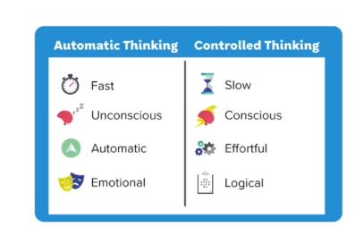
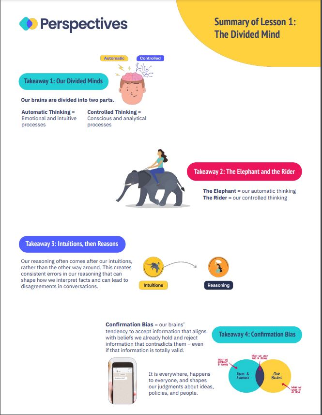

sol_7주차
The Divided Mind
- 내가 완벽하게 확실하다고 여기는 쟁점에 대해 상대방과 일치하지 않을 때 어떻게 상대방의 마인드를 바꿀 수 있는가
Our Ancient Brains
우리를 답답하게 하는 여러가지 불일치가 여러가지 일이 있지만 그것은 우리의 뇌가 어떻게 작동하는지 모르기 때문이다.
우리는 복잡하고 상호 연결된 사회에서 살고 있지만 우리의 뇌는 그 기술을 따라갈 만큼 업데이트 되지 않았다.
- 우리의 뇌는 우리 근대 사회에 적절하게 진화되지 않은 것을 알 수 있음
Mental Shortcuts
우리의 뇌는 초기에 생존에 맞춰서 발전해왔다. 정보를 아주 빠르게 처리하는 방법을 발전시켜 왔다
그래서 생각을 빨리 하는 지름길을 여러 개 만들었다는 걸 알 수 있다
우리는 여전히 주변 세상을 이해하는데 정신적 지름길을 이용하는데 현대에 와서 추론하고 의사 결정하는데 실수하게 만든다
Our Divdied Minds
우리의 뇌는 자동으로 처리되는 부분과 조절할 수 있는 부분 두 개로 나뉜다
자동적인 : 감정, 직관적인 부분(생존 관련)
통제할 수 있는 부분 : 의식적이고 분석적인 정보 처리를 한다(정보 처리가 느린 편)

A good Deal
- 중고차를 사려고 했는데 아주 좋은 차가 나왔다 근데 전 차 주인이 아주 유명한 연쇄살인마다.
- 살것인가?
The Rider and Elephant
- 많은 사람들이 그 차를 사지 않으려 한다.(즉각적인 반응) 대부분은 이를 역겨워 한다.
- 우리의 마음은 코끼리에 탄 사람의 마음에 비교할 수 있다
통제할 수 있는 부분과 자동적인 부분의 격차가 얼마나 큰지 이해하게 하는 비유 : 고삐를 쥘 수 있지만 굉장히 힘이 센 동물 위에 앉아 있다.
밤에 자야 하는데 TV를 보거나 계획을 미루는 것은 자동적인 부분(코끼리)를 따라간다고 할 수 있음
Intuitions First, Reasoning Second
- 우리의 코끼리는 굉장히 큰 역할을 한다. 무언가를 할 때 직관이 먼저 작동하고 의식이 그 직관을 합리화하고 정의한다
이건 너무 빠르게 일어나는 일이라 의식할 수 없음.
그래서 이런 결정을 라이더가 했다고 착각하게 함
- 직관이 먼저 작동하고 추론은 나중에 그걸 합리화한다.
Autopilot
- 자동적인 게 나쁜 건 아닌데 너무 빨리 일어나다 보니까 혼돈스러울 때가 있다.
Cognitive Biases(인지 편향)
Confirmation Bias(확증편향)
- 우리가 이미 갖고 있는 신념과 일치하는 것은 쉽게 받아들이고 맞지 않는 것은 거절한다.
Whose Facts?
- 우리의 코끼리는 정보를 기존의 직관, 느낌으로 걸러낸다 우리는 이걸 의식하지 못할 뿐만 아니라 합리화하는 걸 돕는다
Life Hack: Swapping Places
스스로의 확증편향은 알아채기 어렵지만 확인할 수 있는 방법이 있다. 우리는 이걸 ’입장 바꿔보기’라고 부른다.
확증편향에서 벗어나는 방법
내 생각이 가장 보편화된 것이라고 확신할 때
다른 입장이나 예외를 찾아 볼 것
Lesson 1 Recap
- 우리의 뇌는 두 가지 시스템이 있다 : 자동적인 것과 통제할 수 있는것
- 우리의 이성은 종종 직관을 따른다
- 이 두 가지는 상충되는데 우리는 이걸 알아차리지 못한다
- 우리가 실수하는 이유는 이 두 가지 요소가 의견을 불일치 했기 때문
